|
北京一周(2)
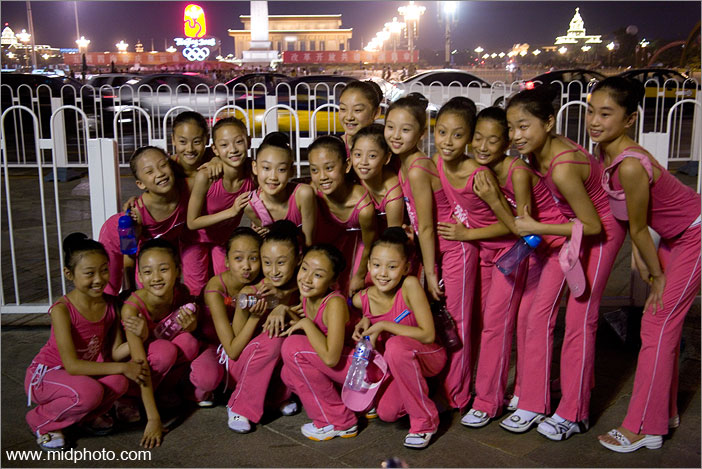
天安门前的美少女们，身材一级棒
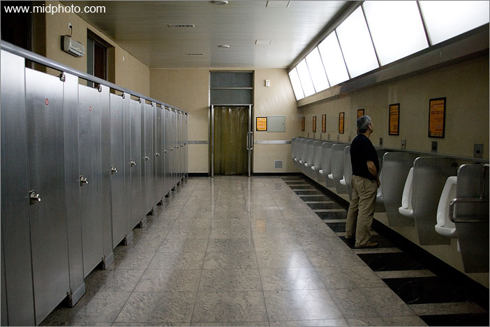
前门附近的公共厕所。人有三急啊，如厕问题事关国计民生，北京的厕所之恐怖曾吓得很多老外魂飞魄散。奥运会给北京老百姓最大的好处之一就是解决了街头上厕所的难题。不管是旅游景点还是胡同小巷，新建和改建的厕所满地开花。
大多数新地铁站都有厕所，无法建厕所的老地铁站（如王府井）也运来了临时厕所。
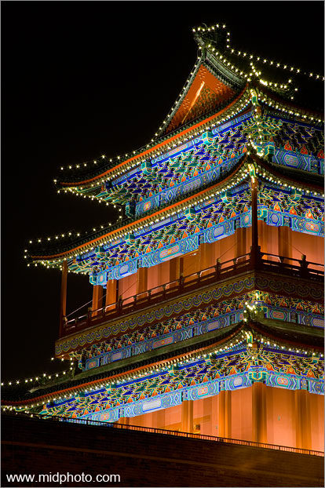
前门局部
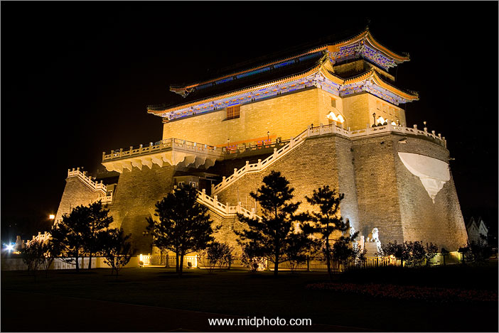
黑暗中的箭楼
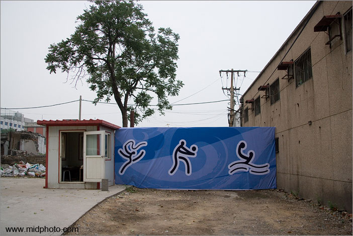
人民大会堂附近的巷子
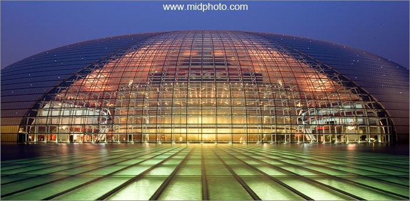
国家大剧院正面标准像
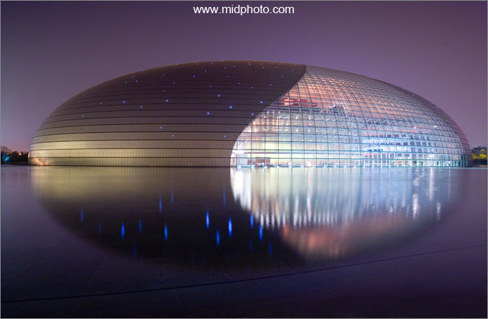
巨大鸟蛋 - 国家大剧院，national centre for
performing arts.
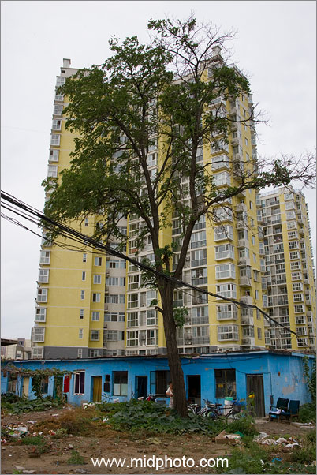
我住在南三环和四环之间凉水河边的翠源居。为了减少奥运期间北京的灰尘和噪音污染，北京所有的建筑工地都停工两个月（20/7-20/9)。有一位建筑公司的朋友他公司宿舍就在此小区，因停工而空置，我托奥运的福蹭了个住。
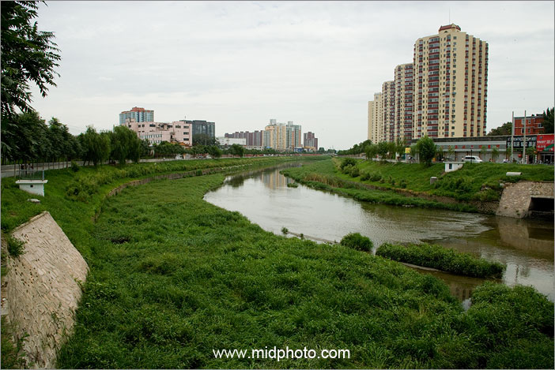
这就是我每天经过的凉水河，已经差不多干了。此处居民说这条小河2006年以前一直是臭水河，2007开始变得干净起来，到今年已经没有什么味道了
（枯水期）。奥运会给城市水道治理和老百姓的生活带来了巨大好处，不然这条臭水沟不知道要等到哪一年才能治好。
今天的北京在城市生活垃圾的集中无害处理上也已经走在世界前列（虽然胡同里的卫生死角还很多）。诺大一个香港的垃圾都是在郊区就地掩埋，几年前香港的环保分子还在政府新挖的垃圾填埋场展开了静坐抗议。据新华社报导2001到2008北京市在奥运场馆建设上总共花费130亿人民币，而花在城市交通、能源基础设施、水资源、城市建设等方面的钱达2800亿元。
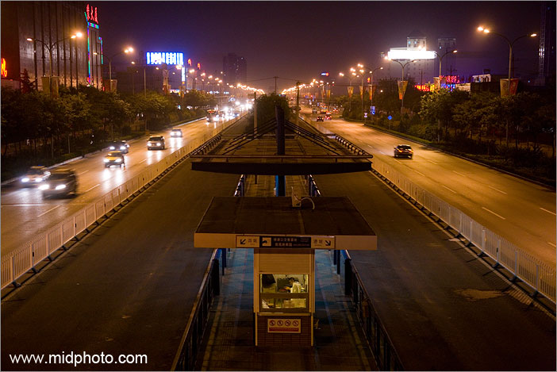
深夜的BRT（北京快速公交）1号线南苑路果园站。快速公交是半封闭专用车道，占据了道路的中间，车速很快，车子是两节的大型加长巴士（进口组装的青年Neoplan或IVECO），每辆造价百万。如果刷卡的话，不论乘坐距离远近一律人民币0.4元，我晕，以为回到了三十年前。北京地铁也是不论远近一律人民币两元，明显的亏本价。看来政府对公共交通的补贴投入巨大。
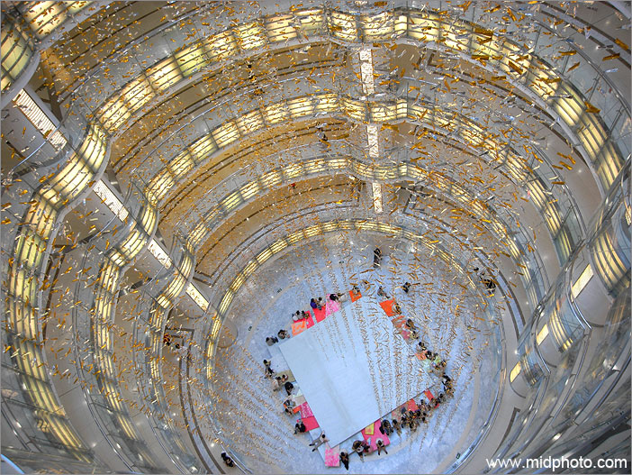
西单大悦城购物中心joycity，北京年轻人的喜爱
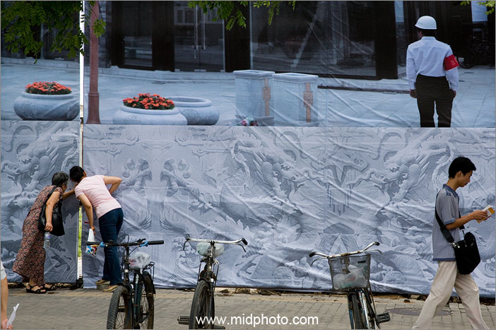
看。前门街头。
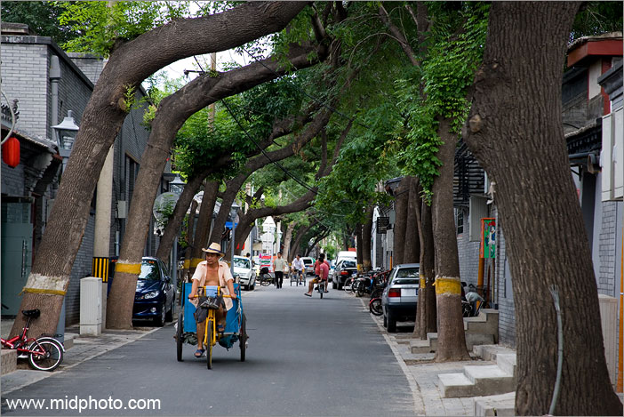
北京东城区育群胡同
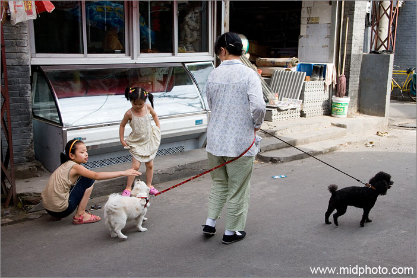
胡同溜狗阿姨
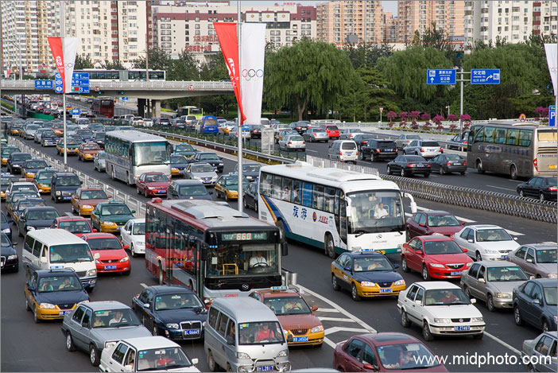
北四环奥林匹克公园附近堵车。北京实行单双号通行，少了一半车，但主要干线都划出了奥运专用车道，等于道路减少，所以依然堵车。
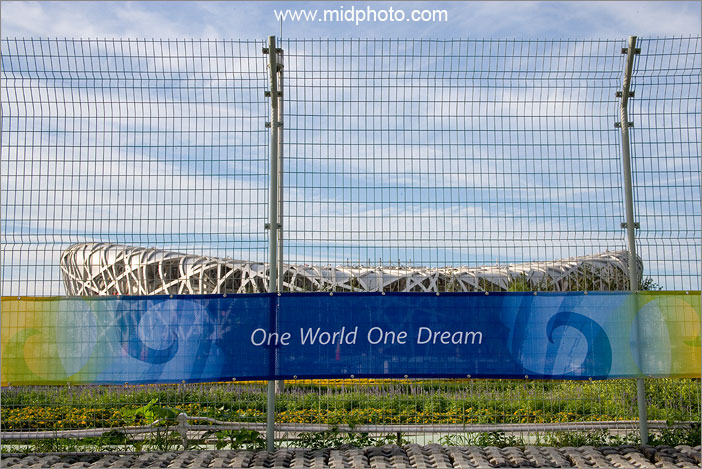
鸟巢已经戒严，我拍不到
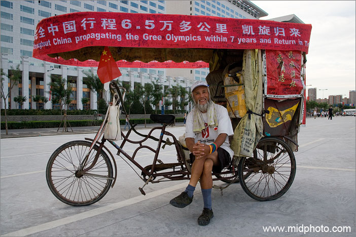
这位老人的三轮车停在水立方前面的广场上，上写：贺奥运 -
7年走完全中国6万5千公里。水立方广场上打着条幅的三轮车摩托车板车很多，都是民间人士来北京祝贺奥运的。骑单车跑长途的圈子里有个俗话：十个打旗九个骗。这些年打着奥运旗帜长途骑行的很多，虽然也有好的，但借机骗财骗色的也很多。however，这些人长途骑行的勇气和毅力还是值得肯定的。
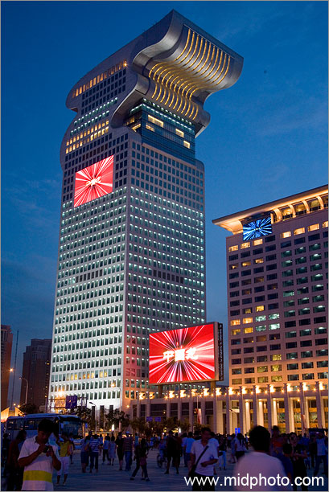
鸟巢附近的盘古大观酒店建筑群，应该算北京的新地标建筑之一了，据说楼顶是空中四合院
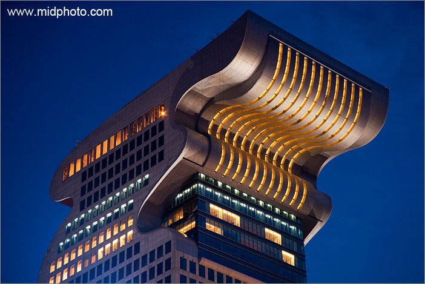
这就是传说中的空中四合院，俺怎么也没看出来这东西是龙型的
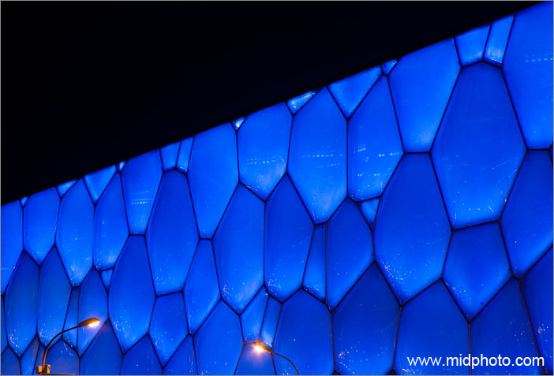
奥运会游泳馆水立方
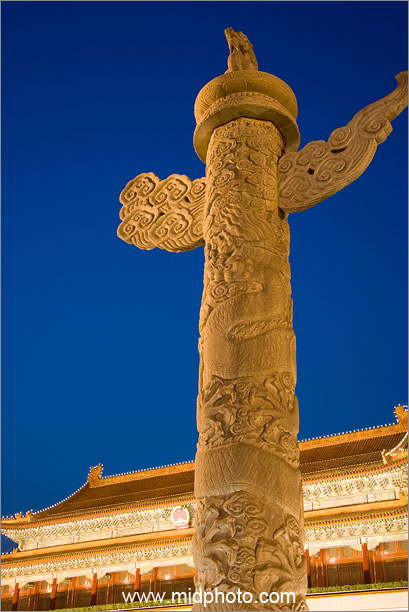
华表
其他北京图片：
从毛泽东到莫扎特 - 北京798印象（80张图片，2007年9月9日）
北京老舍茶馆专题（15张图片，2007年6月18日）
北京凌晨手记（30张图片，2007年6月15日）
部分图片汇报2007年4月的北京西安（16张图片，2007年5月28日）
一个摄影师的北京视觉日记 - 北京拍摄计划并征志愿者（2007年4月5日）
北京专题推迟了一年多，到现在依然没有完成，我决定2008年底之前一定完成，不然死不瞑目。
|